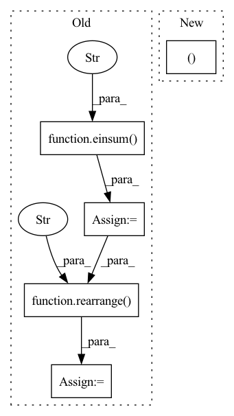

Pattern ID :1433

Before Change
weight = weight.masked_fill(mask[..., None], 0.)
gate = rearrange(gate, "b n (h d) -> b h n d", h = h)
gate = einsum("b h n d, h n m -> b h m d", gate, weight)
gate = gate + rearrange(bias, "h n -> () h n ()")
gate = rearrange(gate, "b h n d -> b n (h d)")
return gate * res
def gMLPBlock(
After Change
res, gate = x.chunk(2, dim = -1)
gate = self.norm(gate)
gate = F.pad(gate, (0, 0, 0, 0, 1, 0), value = 0.)
gate = torch.cat((gate[:, :-1], gate[:, 1:]), dim = 2)
weight, bias = self.weight, self.bias
In pattern: SUPERPATTERN
Frequency: 3
Non-data size: 5
Instances
Fragment ID: 4893418
Project Name: lucidrains/g-mlp-gpt
Commit Name: a2f065dfcf7be1d1e4b205ac1a55de4ad1b3327d
Time: 2021-05-20
Author: lucidrains@gmail.com
File Name: g_mlp_gpt/g_mlp_gpt.py
M Class Name: CausalSpatialGatingUnit
N Class Name: CausalLocalSGU
M Method Name: forward(2)
N Method Name: forward(2)
M Parent Class: nn.Module
N Parent Class: nn.Module
M File Name: g_mlp_gpt/g_mlp_gpt.py
N File Name: g_mlp_gpt/g_mlp_gpt.py
M Start Line: 90
M End Line: 100
N Start Line: 130
N End Line: 154
'>
Before Change
if exists(mask):
v.masked_fill_(~mask, 0.)
context = einsum("b h n d, b h n e -> b h d e", k, v)
out = einsum("b h d e, b h n d -> b h n e", context, q)
out = rearrange(out, "b h n d -> b n (h d)")
return self.to_out(out), 0
class EquivariantAttention(nn.Module):
def __init__(
After Change
def forward(self, x, queries, mask = None):
induced = self.attn1(queries, x, mask = mask)
out = self.attn2(x, induced)
return out, 0
class EquivariantAttention(nn.Module):
def __init__(
self,
'>
Fragment ID: 4893419
Project Name: lucidrains/en-transformer
Commit Name: 6bd1817d780502d24a2515e850c9cd1600f24642
Time: 2021-06-04
Author: lucidrains@gmail.com
File Name: en_transformer/en_transformer.py
M Class Name: GlobalLinearAttention
N Class Name: GlobalLinearAttention
M Method Name: forward(4)
N Method Name: forward(4)
M Parent Class: nn.Module
N Parent Class: nn.Module
M File Name: en_transformer/en_transformer.py
N File Name: en_transformer/en_transformer.py
M Start Line: 132
M End Line: 151
N Start Line: 160
N End Line: 162
'>
Before Change
sim = einsum("b h d i, b h d j -> b h i j", q, k)
attn = sim.softmax(dim = -1)
out = einsum("b h i j, b h d j -> b h i d", attn, v)
out = rearrange(out, "b h (x y) d -> b (h d) x y", x = h, y = w)
return self.to_out(out)
class FiLM(nn.Module):
def __init__(
After Change
if exists(self.time_cond):
assert exists(time)
scale, shift = self.time_cond(time).chunk(2, dim = -1)
x = (x * (scale + 1)) + shift
if has_context:
'>
Fragment ID: 4893416
Project Name: lucidrains/recurrent-interface-network-pytorch
Commit Name: 5cd08b2823cfe105785a525aea43a7396fea07e9
Time: 2022-12-24
Author: lucidrains@gmail.com
File Name: rin_pytorch/rin_pytorch.py
M Class Name: Attention
N Class Name: Attention
M Method Name: forward(4)
N Method Name: forward(3)
M Parent Class: nn.Module
N Parent Class: nn.Module
M File Name: rin_pytorch/rin_pytorch.py
N File Name: rin_pytorch/rin_pytorch.py
M Start Line: 149
M End Line: 161
N Start Line: 199
N End Line: 225